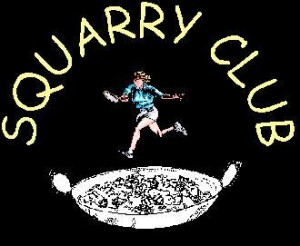

{kind=link}
Welcome and thank you for visiting the Squarry Club’s website!
Recent updates:
10th Feb 2024 – Home page and Tributes page updated.
13th June 2023 – Crosby notes added.
Who are we?
The Squarry Club (or squash and curry club), evolved in Stoke-on-Trent in the early 90’s when a group of 3 or 4 Engineers and Surveyors, eager to get fit !?, took up squash on a weekly basis. As the weeks went by, a visit to local hostelries after the squash became routine. At the end of every month, after ‘pay’ day, a trip to an indian restaurant also crept in.
As the years went by and some of the members became less able to play squash without sustaining an injury, the squash was dropped. The monthly curry nights however, along with visits to real ale establishments and breweries have continued. Other Squarry events include office walks which began in 1992, annual trips abroad and trips to the gee gees. Rounds of golf are played by some and outings to cricket and footie matches are also slipped in from time to time. The club has expanded somewhat, in all respects! It has now developed into a group of about 80 members, or ‘Squarrites’.
{kind=link}
The Yupmeister
Our website was created by the Squarry Club founder, the one and only legend, Dave Stevens – otherwise known as Yup, Yuppy or The Yupmeister! Yup dedicated much of his time to the organisation of countless events near and far, which you can read about on the website. Thanks to Yup’s hard work, Squarrites have enjoyed many happy times together and Yup always brought fun and laughter to any occasion. Behind the scenes, Yup would organise Squarry branded items such as calendars, t-shirts and pens. Yup enjoyed using quirky puns and always signed off his emails with an apt phrase, “Enjoy yer…” So, we hope you “Enjoy yer Website!”
When the news came that Yup had suddenly passed away due to the rapid deterioration in his health, his family, friends and all the Squarrites were devastated, to put it mildly. You can read more about Yup, along with other Squarrites who have passed and who are sadly missed here.

The Squarry club lives on with support from various members. Without Yuppy at the forefront and without his laugh being heard amongst the real ale slurps and poppadom munching, we know the club will never be quite the same. But we are doing our utmost to continue his legacy, holding him in our hearts.
As Yup would say, “Enjoy yer Club!”
Click here for Squarrite Profiles. Or here for Squarry Club Nicknames.
A True Squarrite
- Orders 2 pappodoms each upon entering an indian restaurant
- Always washes his hands before ripping a nan apart
- Splits bills fairly
- Speaks politely to waiters and behaves admirably at all times
- Never removes items from restaurants
- Cheerfully accepts having the mick taken out of them from time to time and
- having their mug shots brandished on the baltibugle site (within reason of course)
- Acknowledges that their colleagues bladders are also weakening day by day
Squarry Club News
-
The Squarry club kicked back in again following the end of another lockdown with a local walk issued at relative short notice on 19th May 2021, a pre-post pandemic local Squarry do in June, and the first full Squarry do on 30th July.
- Dasher and Debbie finally tied the knot on Saturday 12th August 2017 at Newcastle Registry Office. This was the very first marriage between a Squarrite and a Squarrette within the group. So, many congratulations to you both and all the very best for the future. Enjoy yer honeymoon……….. Click here for the wedding snaps.
The Mystery Christmas Squarry doos
This tends to be the most eagerly anticipated event of the year. Check out where we’ve ended up by visiting the ‘Blasts from the Past’ page.
Calendars
Squarry Club calendars are now available for downloading in pdf format. 2023, 2022, 2021, (Alternative Bird Calendar), (Alternative Dog Calendar), 2020, 2019, 2018, 2017, 2016, 2015, 2014, 2013, 2012, 2011, 2010, 2009, 2008, 2007
Squarry Club Kitty
A kitty was suggested several years ago for use in emergencies or whatever seemed fit. This is made up from surplus spare cash collected on our doos.
29th July 2016 the current Squarry Club kitty stands at £62.
12th Aug 2016 – AN’s leaving do – £10. Kitty Total £72.
4th Dec 2016 – It’s NOT a Mystery surplus – £40. Kitty total £112.
24th Feb 2017 – A Crewe Dooo surplus – £16.75. Kitty Total £128.75.
31st March 2017 – Kiddy & Bewdley surplus – £5.50. Kitty total £134.25.
22nd April 2017 – Flower Presentation – £40. Kitty total £94.25.
3rd May 2017 – Credit towards Presentation – £5. Kitty Total £99.25.
5th May 2017 – Tamworth and Lichfield surplus – £10. Kitty Total £109.25.
1st Dec 2017 – It’s NOT a Mystery surplus – £30. Kitty running total now £139.25.
29th Dec 2017 – £15 deducted to balance Walk bus payments. Kitty total stands at £124.25.
13th April 2018 – £22.50 deducted for Whisky Toasts on the 100th walk. Kitty balance now £101.75.
3rd March 2021 – £31.45 deducted for flower gift. Kitty balance now £70.30.
20th January 2022 – £7 deducted for chocolates gift to Apedale Volunteers. KB now £63.30.
12th July 2023 – £42 deducted for flowers for Margy. Balance now £21.30.
Cheddleton open gardens
Takes place early July, so keep your eyes peeled for that one. Pick up ideas for your own gardens and enjoy the refreshments available at many of the gardens. Not only a superb garden but the best cakes and teas can be found at 148 Cheadle Road. Click here for the latest details.
Squarry Club Down Under
Yes, the Squarry Club has been extended ‘down under’, New Zealand to be precise, home of Mo ‘Who’ and his family. Check out these links for his Indian Meal and St Patrick’s Day celebrations in his office.
The previous web site had almost 2,000 new hits during the few years it was online. Check out the latest no to this latest site which you can find in the lower left hand corner of this page.